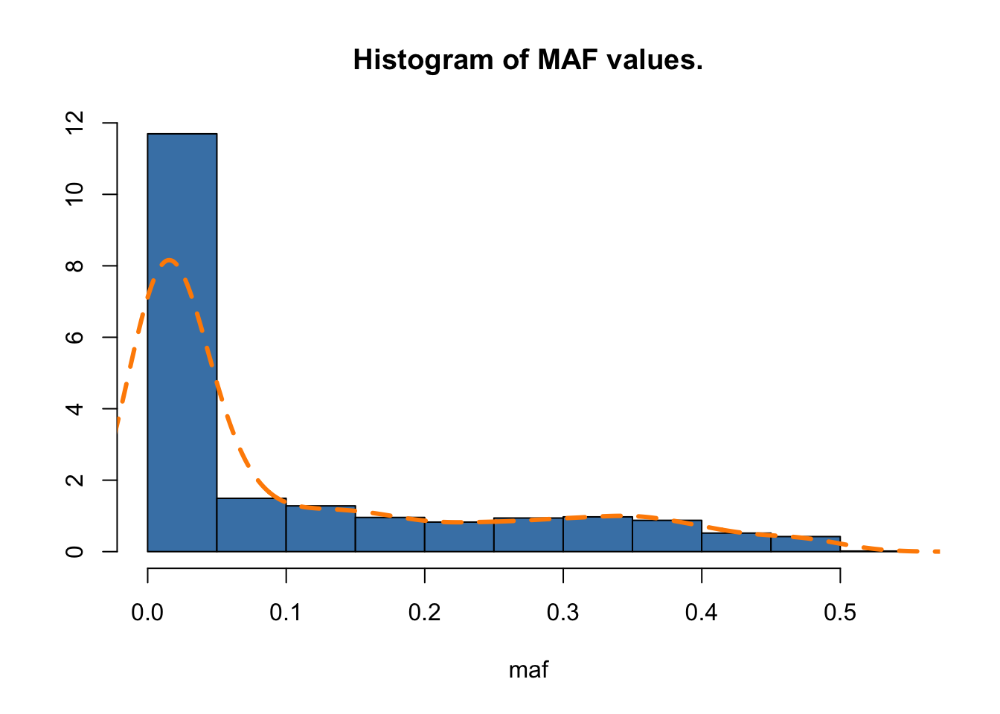
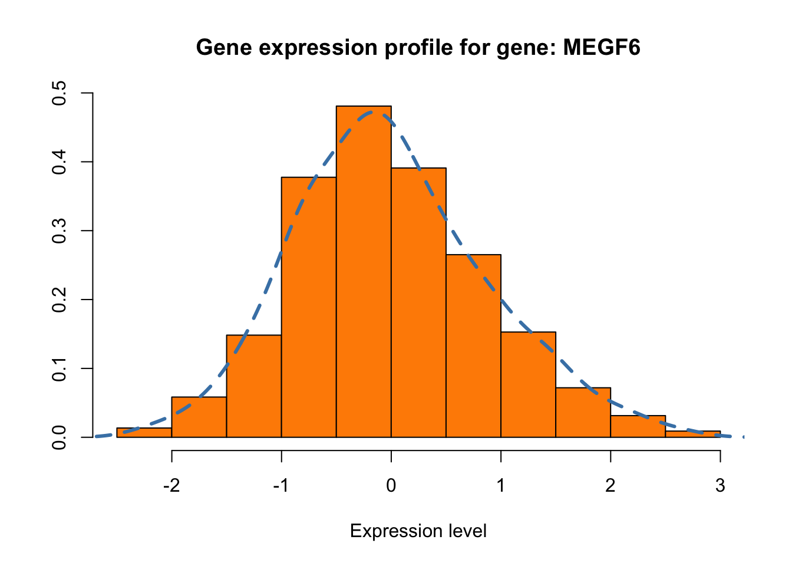
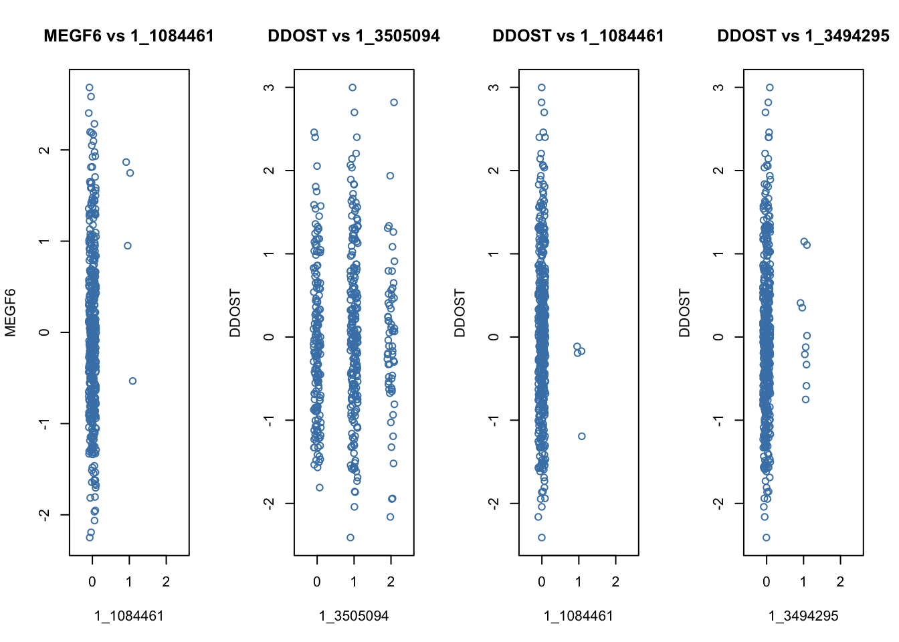
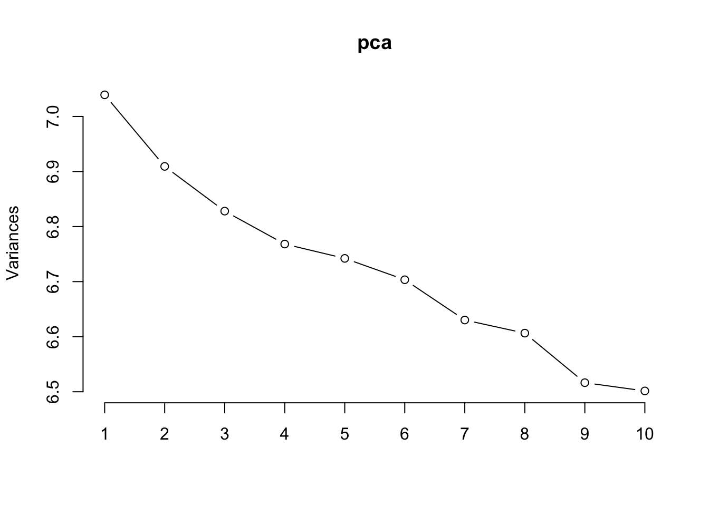
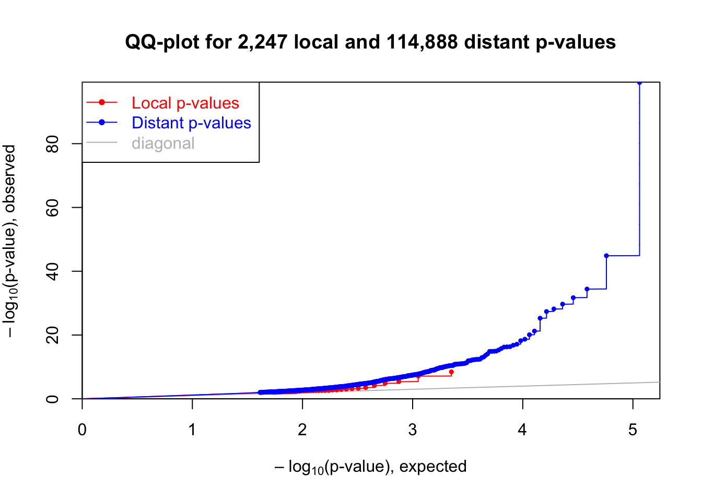
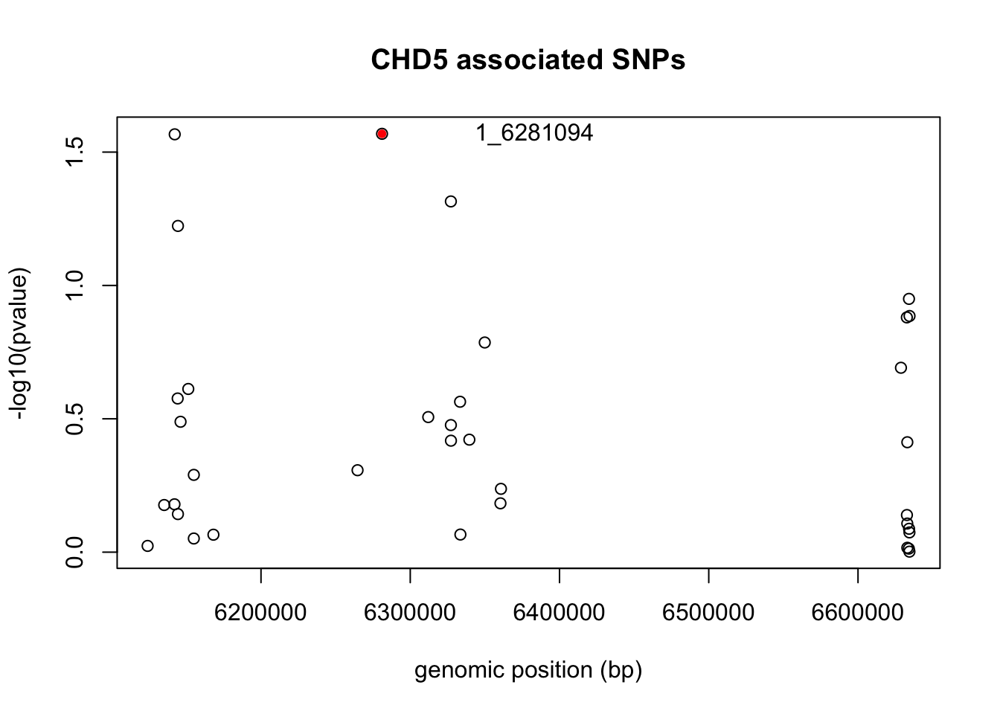

Chapter 9 Perform eQTL Analysis
We will use “MatrixEQTL” package in R. To install the package use the codes: install.packages("MatrixEQTL")
# R codes- run in R Console
#load R packages
library(data.table)
library(readr)
library(tidyr)
library(dplyr)
library(MASS)
library(MatrixEQTL)# change the path below to where you saved "cshl_gwas" folder
## run in R Terminal
mydir="/path/to/cshl_gwas/Data/eqtl"
cd $mydirInput files:
- geno.txt: rows are SNPs with row names as SNP IDs, and columns are sample IDs.
- gexp.txt: rows are genes are and columns are sample IDs.
- covariate.txt: covariates that can be included in the model if there is any
- snppos.txt: a file containing the annotation of SNPs, containing SNP ID, chromosome, SNP location
- genepos.txt: a file containing the annoation of genes, containing gene ID, chromosome, start and end location.
snps <- read.table("geno.txt",header=T,row.names = 1)
expr <-read.table("gexp.txt",header=T,row.names = 1)## [1] 95 446## TCGA.95.7947 TCGA.44.2668 TCGA.67.3771 TCGA.44.5645 TCGA.J2.8192
## MEGF6 -1.7039663 -0.8306681 0.4996123 -0.10811713 -1.3135328
## CHD5 -1.5014151 -0.9932854 0.7771261 0.05612592 -1.6077701
## ENO1 -0.4321024 0.5108690 -0.3609281 -0.54581900 1.3750899
## DRAXIN 1.3684842 0.9638396 -1.3744826 -0.84216045 1.0581984
## ZBTB17 -0.6143779 0.9830016 0.1736160 1.82123575 -0.7976982
## FAM131C -1.0363593 -0.7491167 0.1745167 -1.06965547 -0.3285437
## TCGA.69.7760 TCGA.86.8669 TCGA.55.6642 TCGA.78.7152 TCGA.73.4670
## MEGF6 0.57720969 -0.4214555 0.6951667 0.02822393 -1.13412292
## CHD5 0.61924638 -0.1614920 0.9675196 0.36484065 -0.81739662
## ENO1 0.84316765 -0.8666666 0.3824851 -1.07588918 0.12118157
## DRAXIN 0.06624432 -0.5230045 -0.3455284 0.40864125 0.09858754
## ZBTB17 -0.52120134 -0.6104587 2.2036663 -0.56695639 -0.05699867
## FAM131C 1.04442446 -1.1189474 1.3912519 0.60401049 0.99286065
## TCGA.44.3398 TCGA.64.5774
## MEGF6 -0.5528690 -1.22563359
## CHD5 -0.4844963 -0.88951313
## ENO1 -0.1207141 -0.07861717
## DRAXIN 1.7043598 0.64637444
## ZBTB17 -1.0139111 -0.21597977
## FAM131C -0.2412090 -0.02636789## [1] 1233 446## TCGA.95.7947 TCGA.44.2668 TCGA.67.3771 TCGA.44.5645 TCGA.J2.8192
## 1_1084461 0 0 0 0 0
## 1_1085966 0 1 0 0 0
## 1_1086028 0 0 0 0 0
## 1_1086035 0 1 1 1 0
## 1_1087043 0 0 0 0 0
## 1_3494295 0 0 0 0 0
## TCGA.69.7760 TCGA.86.8669 TCGA.55.6642 TCGA.78.7152 TCGA.73.4670
## 1_1084461 0 0 0 0 0
## 1_1085966 1 1 0 1 0
## 1_1086028 0 0 0 0 0
## 1_1086035 1 0 1 0 0
## 1_1087043 0 0 0 0 0
## 1_3494295 0 1 1 0 0
## TCGA.44.3398 TCGA.64.5774
## 1_1084461 0 0
## 1_1085966 0 0
## 1_1086028 0 0
## 1_1086035 1 0
## 1_1087043 0 0
## 1_3494295 0 0maf<-read.table("geno_maf.txt")$V1
truehist(maf, main = "Histogram of MAF values.", col = "steelblue")
lines(density(maf), lty = 2, col = "darkorange", lwd = 3)
9.1 Filtering SNPs by MAF
In an eQTL study often a minimum MAF is required. Since MAF essentially reflects how often an allele has been observed in a population, it also defines how often the gene expression levels have been observed for heterozygous and homozygous alleles.
Calculate the number of heterozygous and homozygous observations expected for SNPs with a MAF of 5%, 10% and 15% given Hardy-Weinberg equilibrium. What are useful MAF thresholds for SNPs to include in an eQTL analysis?
p = c(0.05, 0.1, 0.15)
q = 1-p
# Calulate frequency of minor allele being present in homozygous and heterozygous state
f_hom = p^2
f_het = 2*p*q
# Expected number of observations in a sample size of 10000
sample_size = 500
round(f_hom * sample_size)## [1] 1 5 11## [1] 48 90 1289.2 Gene expression profiling
Now that we have an idea of what is stored in the genotype data frame let’s take a look at the expression data. For eQTL analyses it is important for the gene expression to be normally distributed among samples, therefore RNA-seq data has to be transformed by, for example quantile normalization.
Let’s check the distribution of gene expression levels across samples for the first gene in our expr data frame.
gname = rownames(expr)[1]
truehist(as.numeric(filter(expr, rownames(expr) == gname)[-1]), main = paste("Gene expression profile for gene:",gname), xlab = "Expression level", col = "darkorange")
lines(density(as.numeric(filter(expr, rownames(expr) == gname)[-1])), lty = 2, col = "steelblue", lwd = 3)
Now we’ll plot the expression levels of the first gene against the first SNP, 10th gene against the 10th SNP, 10th gene against the 1th SNP, as well as the 10th gene against the 6th SNP, depending on the genotypes of the samples by using simple dot plots. We’ll add a bit of random noise (jitter) to the genotype data to make it all look more comprehensible.
par(mfrow=c(1,4))
plot(jitter(as.numeric(snps[1,]), factor = 0.5), as.numeric(expr[1,]),
xlab = rownames(snps)[1], ylab = rownames(expr)[1], col = "steelblue",
main = paste(rownames(expr)[1], "vs", rownames(snps)[1]), xlim= c(-0.5,2.5), xaxt="n")
axis(1, at =c (0,1,2), labels = c("0", "1", "2"))
plot(jitter(as.numeric(snps[10,]), factor = 0.5), as.numeric(expr[10,]),
xlab = rownames(snps)[10], ylab = rownames(expr)[10], col = "steelblue",
main = paste(rownames(expr)[10], "vs", rownames(snps)[10]), xlim= c(-0.5,2.5), xaxt="n")
axis(1, at =c (0,1,2), labels = c("0", "1", "2"))
plot(jitter(as.numeric(snps[1,]), factor = 0.5), as.numeric(expr[10,]),
xlab = rownames(snps)[1], ylab = rownames(expr)[10], col = "steelblue",
main = paste(rownames(expr)[10], "vs", rownames(snps)[1]), xlim= c(-0.5,2.5), xaxt="n")
axis(1, at =c (0,1,2), labels = c("0", "1", "2"))
plot(jitter(as.numeric(snps[6,]), factor = 0.5), as.numeric(expr[10,]),
xlab = rownames(snps)[6], ylab = rownames(expr)[10], col = "steelblue",
main = paste(rownames(expr)[10], "vs", rownames(snps)[6]), xlim= c(-0.5,2.5), xaxt="n")
axis(1, at =c (0,1,2), labels = c("0", "1", "2"))
9.3 Covariates
We can also add covariates to the analysis.
## [1] 446 4## sampid age gender race
## 1 TCGA-95-7947 67 male white
## 2 TCGA-44-2668 51 male white
## 3 TCGA-67-3771 77 female black or african american
## 4 TCGA-44-5645 61 female black or african american
## 5 TCGA-J2-8192 65 female white
## 6 TCGA-69-7760 73 male whiteBut due to the requirement of the MatrixEQTL package, categorical covariates need to be recoded as 0,1,2…
covar_recode<-covar
covar_recode$gender[covar_recode$gender=="male"]<-1
covar_recode$gender[covar_recode$gender=="female"]<-0
covar_recode$race[covar_recode$race=="white"]<-1
covar_recode$race[covar_recode$race=="black or african american"]<-0
write.table(t(covar_recode),"covar_recode.txt",quote=F, sep=" ",row.names=T,col.names=F)9.4 Using principle components as covariates
Further we will explore the use of principle components of genotype as covariates in linear models of gene expression to account for unknown sources of variation from genotype.
pca <- prcomp(t(snps), center=TRUE, scale = TRUE)
sum(pca$sdev[1:5]^2)/sum(pca$sdev^2) # percentage of variance explained by first 5 PCs## [1] 0.0278079
9.5 eQTL analysis
Now that we’ve covered the basics let’s focus on real world expression and genotyping data. We’ll be using R’s MatrixEQTL package which is designed for fast eQTL analysis on large genomic data sets. MatrixEQTL can test for association between genotype and gene expression using linear regression with either additive or ANOVA genotype effects. The models can include covariates to account for factors as population stratification, gender, and clinical variables. It also supports models with heteroscedastic and/or correlated errors, false discovery rate estimation and separate treatment of local (cis) and distant (trans) eQTLs. You can learn more about MatrixEQTL here.
9.5.1 cis-eQTL and trans-eQTL analysis
To perform an eQTL analysis we not only need to know the genotype and gene expression values for every sample, but also the genomic positions of genes and SNPs. This is necessary to define which SNPs should be tested against which genes. For cis-eQTL analyses, SNPs in proximity to the gene are chosen and for trans-eQTL analyses SNPs further away, or on different chromosomes, are taken into account. The window in cis-eQTL analysis is commonly chosen to be 500kb-1Mb measured from gene’s TSS.
In addition, the main MatrixEQTL function Matrix_eQTL_main requires several extra parameters for cis/trans analysis:
pvOutputThreshold.cis: p-value threshold for cis-eQTLs.output_file_name.cis: detected cis-eQTLs are saved in this file.cisDist– maximum distance at which gene-SNP pair is considered local.snpspos: data frame with information about SNP locations, must have 3 columns - SNP name, chromosome, and position. See sample SNP location file.genepos: data frame with information about gene locations, must have 4 columns - the name, chromosome, and positions of the left and right ends. See sample gene location file.
We first setup the input files and the above parameters for eQTL analysis:
# eQTL mapping, cis/trans, no pcs
suppressMessages(library(MatrixEQTL))
SNP_file_name <- "geno.txt";
snps_location_file_name <- "snppos.txt";
expression_file_name <- "gexp.txt";
gene_location_file_name <- "genepos.txt";
covariates_file_name <- "covar_recode.txt";
cis_threshold <- 0.01
trans_threshold <- 0.01
cis_dist <- 1e6
# Output file name
output_file_name_cis = tempfile();
output_file_name_tra = tempfile();
## Settings
# Linear model to use, modelANOVA, modelLINEAR, or modelLINEAR_CROSS
useModel = modelLINEAR;
# Only associations significant at this level will be saved
pvOutputThreshold_cis = cis_threshold;
pvOutputThreshold_tra = trans_threshold;
# Set to character() for no covariates
# covariates_file_name = character();
# Error covariance matrix
# Set to numeric() for identity.
errorCovariance = numeric();
# Distance for local gene-SNP pairs
cisDist = cis_distThe following codes performs both cis- and tran-eQTL analysis using the above setup files and parameters. The analysis is run by calling Matrix_eQTL_main, but the input data files need to be stored in required data object structure before it can be called to perform the analysis. The following codes first tell R how to read in the files correctly by specifying delimeters, etc. Then, both the input files and setting parameters were fed to the Matrix_eQTL_main options.
## Load genotype data
snps = SlicedData$new();
snps$fileDelimiter = " "; # the TAB character
snps$fileOmitCharacters = "NA"; # denote missing values;
snps$fileSkipRows = 1; # one row of column labels
snps$fileSkipColumns = 1; # one column of row labels
snps$fileSliceSize = 2000; # read file in slices of 2,000 rows
snps$LoadFile(SNP_file_name);## Rows read: 1233 done.## Load gene expression data
gene = SlicedData$new();
gene$fileDelimiter = " "; # the TAB character
gene$fileOmitCharacters = "NA"; # denote missing values;
gene$fileSkipRows = 1; # one row of column labels
gene$fileSkipColumns = 1; # one column of row labels
gene$fileSliceSize = 2000; # read file in slices of 2,000 rows
gene$LoadFile(expression_file_name);## Rows read: 95 done.## Load covariates
cvrt = SlicedData$new();
cvrt$fileDelimiter = " "; # the TAB character
cvrt$fileOmitCharacters = "NA"; # denote missing values;
cvrt$fileSkipRows = 1; # one row of column labels
cvrt$fileSkipColumns = 1; # one column of row labels
if(length(covariates_file_name)>0) {
cvrt$LoadFile(covariates_file_name);
}## Rows read: 3 done.## Run the analysis
snpspos = read.table(snps_location_file_name, header = TRUE, stringsAsFactors = FALSE);
genepos = read.table(gene_location_file_name, header = TRUE, stringsAsFactors = FALSE);
me = Matrix_eQTL_main(
snps = snps,
gene = gene,
cvrt = cvrt,
output_file_name = output_file_name_tra,
pvOutputThreshold = pvOutputThreshold_tra,
useModel = useModel,
errorCovariance = errorCovariance,
verbose = FALSE,
output_file_name.cis = output_file_name_cis,
pvOutputThreshold.cis = pvOutputThreshold_cis,
snpspos = snpspos,
genepos = genepos,
cisDist = cisDist,
pvalue.hist = TRUE,
min.pv.by.genesnp = FALSE,
noFDRsaveMemory = FALSE);## 95 of 95 genes matched## 1233 of 1233 SNPs matched## 100.00% done, 41 cis-eQTLs, 2,816 trans-eQTLs## for generating QQ plot
me_qq = Matrix_eQTL_main(
snps = snps,
gene = gene,
cvrt = cvrt,
output_file_name = output_file_name_tra,
pvOutputThreshold = pvOutputThreshold_tra,
useModel = useModel,
errorCovariance = errorCovariance,
verbose = FALSE,
output_file_name.cis = output_file_name_cis,
pvOutputThreshold.cis = pvOutputThreshold_cis,
snpspos = snpspos,
genepos = genepos,
cisDist = cisDist,
pvalue.hist = "qqplot",
min.pv.by.genesnp = FALSE,
noFDRsaveMemory = FALSE)## 95 of 95 genes matched## 1233 of 1233 SNPs matched## 100.00% done, 41 cis-eQTLs, 2,816 trans-eQTLsunlink(output_file_name_tra);
unlink(output_file_name_cis);
cat('Analysis done in: ', me$time.in.sec, ' seconds', '\n');## Analysis done in: 0.114 secondsCheck the results from both cis- and tran-eQTL analysis.
## snps gene statistic pvalue FDR beta
## 1 1_3511864 MEGF6 6.026756 3.535416e-09 7.944080e-06 0.4127312
## 2 1_3510998 MEGF6 5.476550 7.297837e-08 8.199120e-05 0.6482393
## 3 1_3595370 MEGF6 4.663200 4.132570e-06 3.095295e-03 0.3867170
## 4 1_33276294 ZNF362 -4.397958 1.371402e-05 7.703849e-03 -0.3397077
## 5 1_147201324 FMO5 4.017027 6.928076e-05 3.113477e-02 0.4584873
## 6 1_147208691 FMO5 3.640420 3.044732e-04 1.140252e-01 1.5402443## snps gene statistic pvalue FDR beta
## 1 1_44635806 ZRANB2 28.00674 6.471532e-100 7.435014e-95 1.0147980
## 2 1_23079379 ERI3 15.96221 1.342469e-45 7.711681e-41 0.7810163
## 3 1_160424115 WDTC1 13.53285 3.825718e-35 1.465097e-30 0.6954722
## 4 1_15945755 TCEA3 12.87702 1.963422e-32 5.639342e-28 0.6521932
## 5 1_23079372 ERI3 12.37956 2.036575e-30 4.679561e-26 1.1308205
## 6 1_113973708 RABGAP1L 12.00316 6.445364e-29 1.234158e-24 0.8240020## Make the histogram of local and distant p-values
# y-axis is density, which is rescaled frequency to make the sum of area of bars equal to 1
plot(me)Figure 9.1: Histogram of p-values for cis- and trans-eQTL
# to look at original frequency, use this code
# hist(me$cis$eqtls$pvalue)
# hist(me$trans$eqtls$pvalue)
9.6 Multiple testing correction
Whenever multiple statistical tests are performed, a multiple testing correction has to be performed. This is necessary because many hypotheses are tested. Therefore each calculated association p-value has to be corrected for multiple testing. MatrixEQTL does this for you automatically and returns the corrected p-value as a false discovery rate (FDR). Common thresholds on FDR are 5% or 10%.
9.7 Gene regional Manhanttan plots
Manhattan plots are a way to depict association p-values of multiple SNPs at once. They are also very common in GWAS. Manhattan plots are a rather convinient modality for interpretation of eQTL signals in terms of LD.
Let’s now generate a manhattan plot for gene ENSG00000172404.4, plotting the base-pair position on the x-axis and the −log10(pvalue) of the SNP in the y axis. Manhattan plots usually depict all tested SNPs, not only the ones passing a certain p-value threshold. Therefore we’ll first obtain all the association p-values for all tested SNPs for gene ENSG00000172404.4.
gene_id = "CHD5"
gene_values = read.table(expression_file_name, row.names=1, header=TRUE)
single_gene_exp = SlicedData$new()
single_gene_exp$CreateFromMatrix(as.matrix(gene_values[gene_id, , drop=FALSE]))
single_gene_exp## SlicedData object. For more information type: ?SlicedData
## Number of columns: 446
## Number of rows: 1
## Data is stored in 1 slices
## Top left corner of the first slice (up to 10x10):
## TCGA.95.7947 TCGA.44.2668 TCGA.67.3771 TCGA.44.5645 TCGA.J2.8192
## CHD5 -1.501415 -0.9932854 0.7771261 0.05612592 -1.60777
## TCGA.69.7760 TCGA.86.8669 TCGA.55.6642 TCGA.78.7152 TCGA.73.4670
## CHD5 0.6192464 -0.161492 0.9675196 0.3648407 -0.8173966snpspos = read.table(snps_location_file_name,
header = TRUE,
stringsAsFactors = FALSE)
genepos = read.table(gene_location_file_name,
header = TRUE,
stringsAsFactors = FALSE)
single_cis_eqtl_res = Matrix_eQTL_main(snps,
single_gene_exp,
verbose = FALSE,
output_file_name.cis = NULL,
output_file_name = NULL,
pvOutputThreshold.cis=1,
snpspos = snpspos,
genepos = genepos)## 1 of 1 genes matched## 1233 of 1233 SNPs matched## 100.00% done, 36 cis-eQTLs, 4 trans-eQTLsmanh_data = merge(single_cis_eqtl_res$cis$eqtls, snpspos, by.x = "snps", by.y = "snpid")
manh_data = manh_data [,c("pos", "chr", "pvalue", "snps")]
head(manh_data)## pos chr pvalue snps
## 1 6124032 1 0.94742508 1_6124032
## 2 6135133 1 0.66565394 1_6135133
## 3 6142032 1 0.66151188 1_6142032
## 4 6142185 1 0.02712406 1_6142185
## 5 6144162 1 0.26531540 1_6144162
## 6 6144343 1 0.71987569 1_6144343# Plot the Manhattanplot
with(manh_data ,plot(pos, -log10(pvalue), xlab = "genomic position (bp)",
main=paste(gene_id, "associated SNPs")))
# Highlight the lead SNP
with(manh_data[which.min(manh_data$pvalue),,drop=FALSE] ,
points(pos, -log10(pvalue), pch=20, col="red"))
# Add a label to the lead SNP
with(manh_data[which.min(manh_data$pvalue),,drop=FALSE],
text(pos + diff(range(manh_data$pos))*0.2, -log10(pvalue), labels = snps))